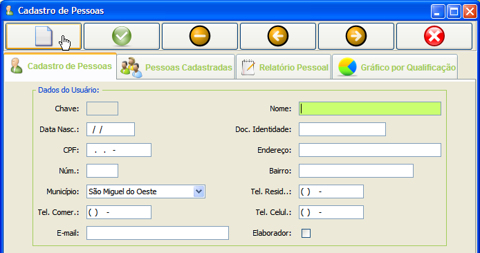

--
--Em conformidade com a Resolução nº 4, De 04 DE Maio De 1994
Para iniciar o programa, ARBORE, clique no ícone correspondente na área de trabalho:
Realize o login, conforme a figura abaixo, informando o nome de usuário no campo com o número 1, a senha no campo com o número 2. Os botões desta tela realizam as seguintes tarefas: o botão que tm o indicativo do número 3 realiza a autenticação do usuério, o botão 4, limpa a tela, o botão que tem a representação 5 fecha a janela e cancela o login.:
Se o login for bem sucedido, será exibido a janela principal, caso contrário o módulo de autenticação fornecerá as informações necessárias para o login, como dica de senha e preenchimento correto dis campos.
Na JANELA PRINCIPAL algumas observações são oportunas.
A Barra de Ferramentas, através de seus botões, disponibiliza as seguintes tarefas (conforme numeração da figura):
NOVO PROJETO - A tela para cadastro de um novo projeto é exibida na figura abaixo. A maioria das telas de cadastro do ARBORE seguem o mesmo padrão.
A barra de botões das telas de cadastros possibilitam as seguintes ações (conforme numeração da figura):
A janela contém abas que dispoem das seguintes caracteristicas (conforme indicativos das letras na figura):
A. Aba Cadastro de Projetos - Exibe o formulário para cadastro;
B. Aba Projetos Cadastrados - Eibe uma tabela com odos os cadastros já realizados;
C. Aba Projetos por Municípios - Exibe um gráfico (pizza) com a quantidade de projetos por municípios;
Conforme a figura acima, o botão circulado de vermelho, possibilita o cadastro de pessoas, sejam elas priprietárias ou elaboradoras, após o cadsatro deve-se clicar o botao atualizar para que os combos com os nomes sejam atualizados.
Cadastro de Pessoas - A Janela de Cadastro de pessoas possibilita o cadastro de proprietarios e/ou elaboradores, diferenciados pela caixa de opção (Elaborador - figura abaixo) que deve ser marcada somente se a pessoa cadastrada está apta a realizar a elaboração de novos projetos. Esta janela tem como particularidade a Aba Relatório Pessoal, que permite a emissão de um relatórios exibindo todas as pessoas cadastradas.

A figura abaixo representa a Janela de Cadastro de Parcelas, a qual é composta por 3 tabelas (representadas pelas letras A,B e C) que apresentam as seguintes caracteristicas e funcionalidades:
A. Tabela de Projetos - Exibe todos os projetos cadastrados. Ao clicar em um projeto (linha da tabela) o software irá selecionar todas as parcelas associadas a este projeto e serão exibidas na tabela do meio;
B. Tabela de Parcelas - Exibe as parcelas do projeto selecionado na tabela A. Esta por sua vez ao ter uma parcela selecionada (linha da tabela de parcelas) seleciona todas as árvores associadas a está parcela e as exibe na tabela C;
C. Tabela de Árvores - Exibe as árvores da parcela selecionada na tabela B.
Os botões 1,2,3 e 4 permitem a associação de parcelas ao projeto, a dissociação entre projetos e parcelas, a associação de parcelas e árovores e a dissociação e, pacelas e árovores, repectivamente.
Adição de parcelas à um Projeto - Ao clicar no botão de adição de parcela (figura acima) o furmulário da figura abaixo será exibido. Após o preenchimento do mesmo, ao clicar no botão [Adicionar], esta parcela será associada ao projeto selecionado na tabela de projetos. Uma parcela só poderá ser eliminada de um projeto quando ésta não tiver nenhuma árvore associada a ela. Não há limites para a associação entre projetos e parcelas.
Adição de Árvores à Parcela - Ao clicar no botãoa de adição de árvores, a janela da figura abaixo será exibida. Após a inserção dos dados o ARBORE associará ésta árvore e a parcela que estiver selecionada na tabela de parcelas. Conforme metodologia de trabalho, só poderá ser associadas 4 árvores a uma parcela. com base nos dados informados o software fará o cálculo da Área Basal (AB) para cada árvores adicionada. o Indicativo numérico 1 da figura mostra o combo que exibe todas as árvores cadastradas no banco de dados; o 2 referencia o botão que faz a adição da árvore na parcela e o 3 fecha o formulário.
A figura abaixo é a representação do aviso que é exibido ao tentar adicionar uma quinta árvore a uma aparcela.
Caso não exista a ávore que se deseja associar a uma parcela, deve-se cadastrar árvore na janela específica, conforme figura abaixo.
FINALIZAÇÃO DO PROJETO - A janela de finalização de projetos, representada na figura abaixo, permite a emissão (indicativo 1) de um relatório com os dados finais do projeto, com os detalhes das parcelas e a AB média do projeto, para que o agente ambiental analize os dados e determine o estágio de regeneração ambiental em que a vegetação do projeto se encontra. Isto é feito com a seleção do projeto (indicativo 1), a seleção do estágio (número 2) e a gravação do mesmo (3).
Após a determição do estágio é possivel a emissão do relatório final (Aba Relatório Final), selecionando o projeto e clicando no botão de emissão (1 e 2).
O botão, que representa uma impressora, da barra de tarefas (ou menu Relatórios), permite a visualizaçõ e impressão de relatórios dos projetos casdastrados, usando como parâmetros o número do projeto (indicativo 1), entre um período de datas (marcação 2) ou um apanhado geral de todos os prjetos cadastrados pelo ARBORE (3);
Para auxiliar o agente ambiental, o programa oferece a impressão de uma ficha de campo, a qual é emitida após o preenchimento dos dados da figura abaixo, que permite a anotação dos dados do projeto em campo para posteriormente serem repassados ao ARBORE para conclusão do laudo.
O programa conta com uma calculadora para obtenção da Área Basal, através da informação do CAP ou do DAP.
Ao realizar o login o software verifica se o elaborador tem permissão para supervisionar o cadastro de usuários. Caso seja supervisor ele poderá cadastrar novos usuários, caso contrário esta opção não estará a disposição.
O cadastro de um novo usuário é exemplificado na figura abaixo sendo rspectivamente:
Barra de Menus - Os menus são mostrados nas figuras abaixo e tem as funcionalidades correspondentes aos nomes dos mesmos:
----
--

Espécies Indicadoras - Este relatório permite a visualização das espécies encontradas em vegetações determinadas, agrupadas pelo estágio de regeneração. Informação extraída da res. 04/ 1994 do CONAMA.
Relatório de Projetos - Este relatório exibe os projetos cadastrados, podendo ser filtrado estre datas, específico por projeto ou a relação de todos os projetos.
Resultados Finais - Este relatórios fornece ao usuário os resultados finais das parcelas, agrupados pelo número do projeto, bem como a Área Basal média do projeto.
Relatório Final -O relatório final é similar ao relatório das figuras acima, exceto pela informação conclusiva do estágio em que a vegetação da área analizada se encontra, estágio determinado pelo elaborados, com base nos relatórios do ARBORE, devemdo o elaborador assinar o laudo.
Todas as opções de saída do software exibem a caixa de mensagens exibida abaixo, devendo o usuário confirmar sua intenção de sair do programa.
-------- FIM --------